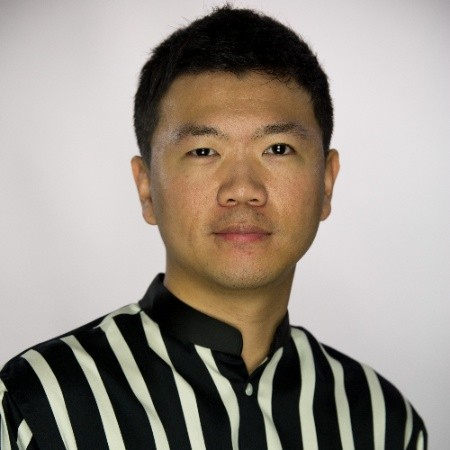

Meet our staff:
Shinro Inc. was founded by Isaac Roh and Jae Shin.
Meet our CEO:
Isaac Roh has been CEO since 2015. After graduating with a B.S.
from UMBC, he started his own company with fellow alumni Jae Shin.
His hobbies are fishing and playing bass.

Meet our CTO:
Jae Shin has been CTO since 2015. Graduated with a B.S. in Information Systems from UMBC,
he co-founded Shinro Inc. with Isaac Roh back in 2015. Ever since then, he has been the
Chief Technology Officer and head of the executive planning
committee. His hobbies are reading and bird-watching.
Meet our Vice President:
Tim Yoo has been Vice President since 2015. With his fellow alumni Isaac Roh and Jae Shin, he has been
leading the company in the righ direction for many years now. Graduated with a B.S. in Information Systems